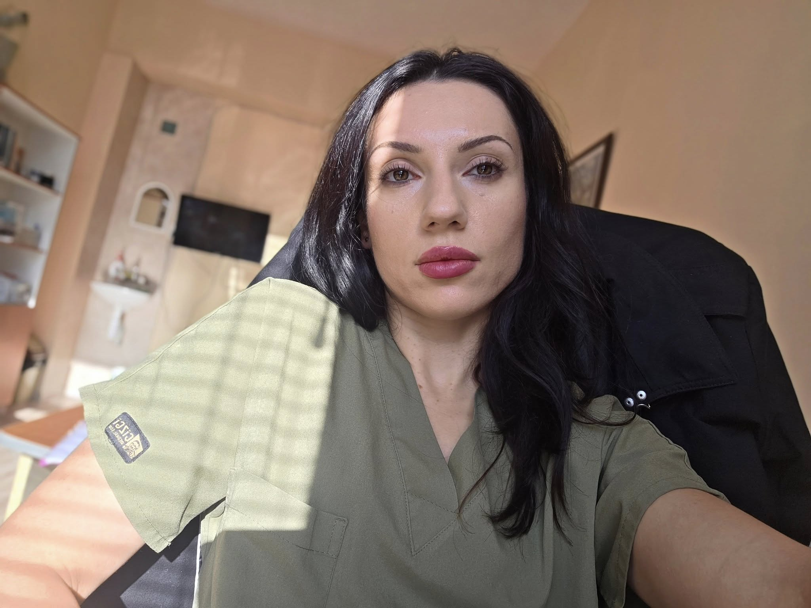

Академичен профил · МБАЛ Хасково Academic Profile · MBAL Haskovo
Лекар специализант · Нефрология · Вътрешни болести Medical Resident · Nephrology · Internal Medicine
„Здравето на бъбреците е здравето на живота." "Kidney health is the health of life."

МБАЛ Хасково АД MBAL Haskovo
За лекаря
About
Д-р Теодора Йорданова Попова е лекар специализант в МБАЛ Хасково АД, където работи в Нефрологично и Вътрешно отделение. Специализира се в диагностиката и лечението на бъбречни заболявания, с акцент върху ранното им разпознаване.
Участва активно в обществено значими медицински проекти за достъп до нефрологична помощ в отдалечени региони, съвместно с Асоциацията на пациентите с бъбречни заболявания и австрийски партньори.
Вярва, че профилактиката и ранната диагностика са ключът към предотвратяване на хронично бъбречно заболяване при уязвимите групи население.
Dr. Teodora Yordanova Popova is a medical resident at MBAL Haskovo AD, working in the Nephrology and Internal Medicine departments. She specializes in the diagnosis and treatment of kidney diseases, with emphasis on early detection.
She actively participates in socially significant medical projects providing nephrology access in remote regions, in collaboration with the Association of Patients with Kidney Diseases and Austrian partners.
She believes that prevention and early diagnosis are the key to preventing chronic kidney disease in vulnerable populations.
Ранната диагностика е изключително важна, за да не се развие хронично бъбречно заболяване. В първите стадии няма симптоми.
Early diagnosis is extremely important to prevent the development of chronic kidney disease. In the early stages there are no symptoms.
— Д-р Теодора Попова, Haskovo.info, 2025
Хронология
Timeline
Ключов проект
Key project
Проектът се развива съвместно с Асоциацията на пациентите с бъбречни заболявания и приятели — организация със седалище в Хасково. Целта е достигане до хора на възраст 18–60 години в отдалечени селища, където липсват специалисти и лаборатории.
Финансиран частично чрез дарение от австрийска компания, с което са закупени два мобилни диагностични апарата. Прегледите се провеждат в мобилен кабинет от медицинска сестра в присъствието на д-р Попова, в почивни дни за удобство на населението. Паралелно се работи по промени в нормативната база за разширяване обхвата на ранната диагностика.
The project is developed in collaboration with the Association of Patients with Kidney Diseases and Friends — an organization based in Haskovo. The goal is to reach people aged 18–60 in remote villages lacking specialists and laboratories.
Partially funded through a donation from an Austrian company, which acquired two mobile diagnostic devices. Examinations are conducted in a mobile unit by a nurse under Dr. Popova's supervision, on weekends for community convenience. Parallel efforts are being made to amend regulations to expand early diagnosis access.
Области на компетентност
Areas of expertise
Диагностика и лечение на бъбречни заболявания, хронична бъбречна недостатъчност, нефротичен синдром.
Diagnosis and treatment of kidney diseases, chronic renal failure, nephrotic syndrome.
Широкопрофилна вътрешна медицина. Системни заболявания с бъбречно засягане.
Broad-spectrum internal medicine. Systemic diseases with renal involvement.
Работа в отделение по хемодиализа на МБАЛ Хасково. Наблюдение на диализирани пациенти.
Work in hemodialysis unit at MBAL Haskovo. Monitoring of dialysis patients.
Профилактични прегледи и скрининг за ХБЗ в рискови групи. Мобилна диагностика.
Preventive checkups and CKD screening in at-risk groups. Mobile diagnostics.
Работа с пациентски организации, местна власт и международни партньори за здравна достъпност.
Collaboration with patient organizations, local authorities and international partners for health accessibility.
Участие в разработване на промени в нормативната уредба за по-широк обхват на ранна диагностика.
Participation in regulatory changes to broaden early diagnostics access.